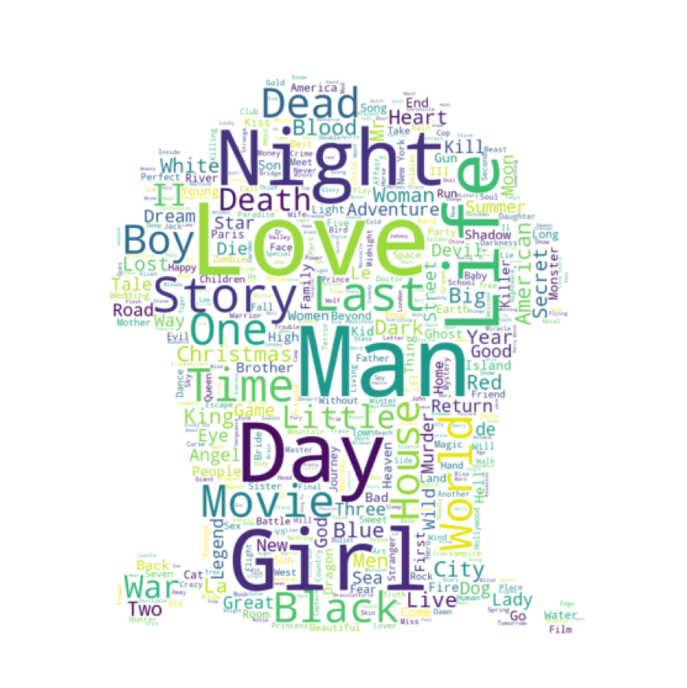
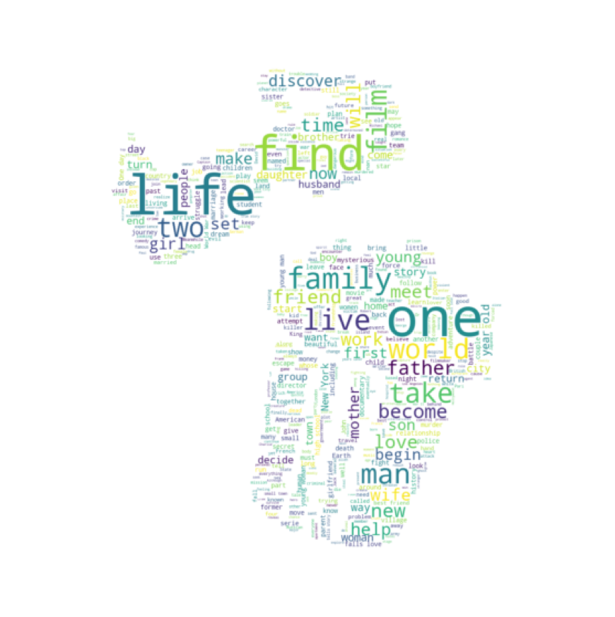

Popular words, part I
Choosing the right word to encapsulate your creative work March 30, 2020

La database étudiée regroupe des films sortis depuis la fin du 19e siècle.
Nous avons voulu observer l’évolution des thèmes évoqués dans chacun des films, or le titre d’un film est en général évocateur du sujet trai...té. Ainsi les mots qui reviennent le plus souvent sont Love, Man, Girl, Day et Night. Derrière, nous retrouvons des mots comme Dead, Death, Time, Story, Life, World.
Rares sont les films aux titres alambiqués et l’illustration ci-jointe illustre la relative simplicité des titres de films.
Par chance nous bénéficions également de descriptions des films. Nous appliquons la même analyse à celles-ci. (post suivant)
Popular words, part II
Discovering the story behind a title March 16, 2020

Si des mots comme « Life »restent importants, on remarque la présence beaucoup plus importantes de verbes d’actions dans les descriptions de films étudiés.
Des verbes comme find, discover, become, live, work, begin sont prépondérants.
Cela n’est pas vraiment étonnant: les films racontant en général l’histoire d’un héros ou d’une héroïne
(à l’exception de productions indépendantes à visées plus expérimentales), l’importance de verbes ayant trait à un itinéraire (become et find) n’est pas choquante.
Ce graphique montre que la majorité des films, ou en tout cas une grande partie,
se fait l’illustration du voyage initiatique de son héros et de ses étapes: the coming of age movie.